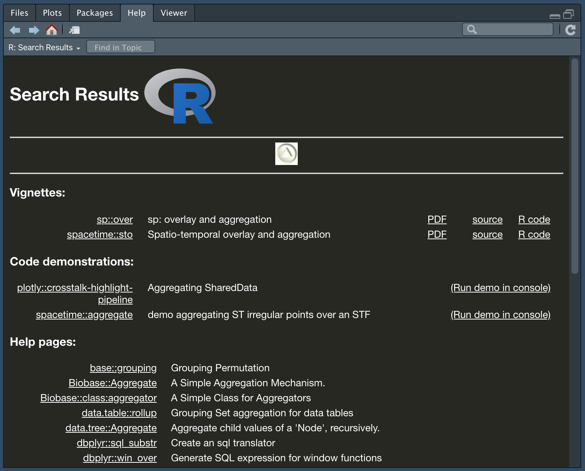
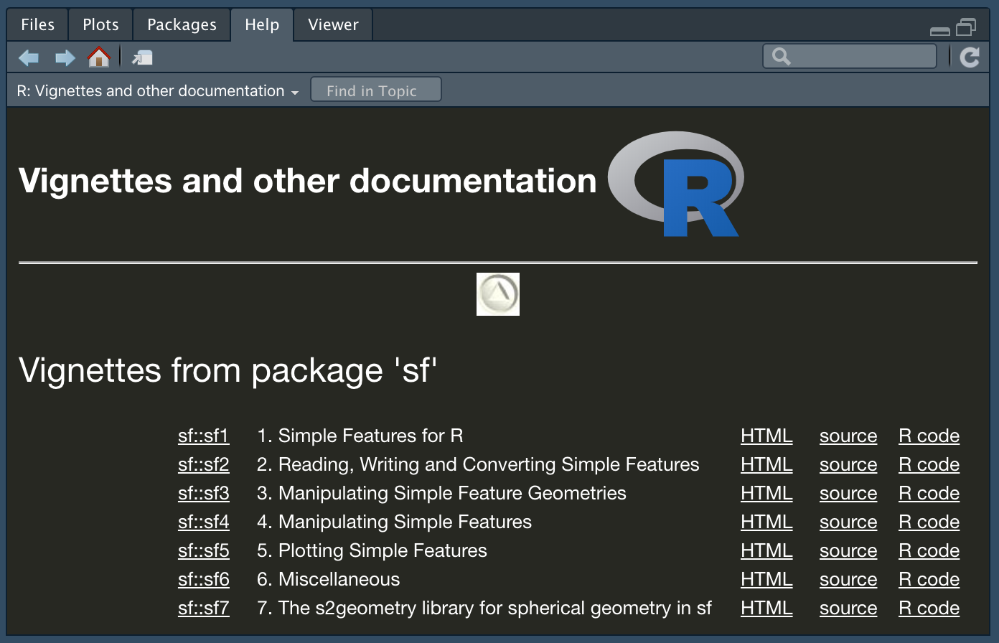

Визуализация и анализ географических данных на языке R
Введение
Продвинутый курс
Если вы уже владеете базовыми навыками обработки пространственных данных на R, обратите внимание на курс по пространственной статистике.
Добро пожаловать в курс “Визуализация и анализ географических данных на языке R”! В данном курсе мы освоим азы программирования на языке R, а затем научимся использовать его для решения географических задач. Никаких предварительных знаний и навыков программирования не требуется.
Программное обеспечение
Для успешного прохождения курса на вашем компьютере должно быть установлено следующее программное обеспечение:
Выбирайте инсталлятор, соответствующий вашей операционной системе. Обратите внимание на то, что RStudio не будет работать, пока вы не установите базовые библиотеки языка R. Поэтому обе вышеуказанные компоненты ПО обязательны для установки.
Установка и подключение пакетов
Существует множество дополнительных пакетов R практически на все случаи жизни (вы тоже можете написать свой). Как и дистрибутив R, они доступны через CRAN (Comprehensive R Archive Network). Одним из таких пакетов является, например, пакет writexl, позволяющий записывать файлы в форматах Microsoft Excel.
Наиболее часто используются два способа установки пакетов в RStudio.
Во-первых, вы можете сделать это в графическом интерфесе, нажав кнопку Install на панели Packages (по умолчанию эта панель расположена в нижней правой четверти окна программы). В появившемся окне введите название пакета и нажмите Install:
Во-вторых, вы можете вызвать из консоли команду install.packages(), передав ей в качестве параметра название пакета, заключенное в кавычки:
install.packages("writexl")Никогда не включайте команду
install.packages()в тело скрипта. Это приведет к тому, что каждый раз при запуске программы среда RStudio будет пытаться заново установить пакет, который уже установлен. Запускайте эту функцию только из консоли.
Подключение пакета осуществляется с помощью функции library(), при этом название пакета можно в кавычки не заключать:
library(writexl)Выполнение программного кода
Если в качестве среды разработки вы используете RStudio, то существует несколько способов выполнения исходного кода:
- Выполнить одну строку: поставить курсор в любую строку и нажать над редактором кода кнопку Run или сочетание клавиш
Ctrl+Enter(Cmd+Enterдля OS X). - Выполнить несколько строк: выделить необходимые строки и нажать над редактором кода кнопку Run или сочетание клавиш
Ctrl+Enter(Cmd+Enterдля OS X). - Выполнить весь код можно сразу тремя способами:
- Выделить весь текст и нажать над редактором кода кнопку Run или сочетание клавиш
Ctrl+Enter(Cmd+Enterдля OS X) - Нажать клавиатурное сочетание
Ctrl+Alt+Enter(Cmd+Alt+Enterдля OS X) - Нажать в правом верхнем углу редактора кода кнопку Source
- Выделить весь текст и нажать над редактором кода кнопку Run или сочетание клавиш
Команды Source и
Ctrl+Alt+Enterмогут не сработать, если у вас не установлена рабочая директория, или если в пути к рабочей директории содержатся кириллические символы (не актуально для Windows 10+, macOS и Linux, которые являются системами, основанными на кодировке Unicode).
Существует также ряд дополнительных опций выполнения кода, которые вы можете найти в меню Code > Run Region.
Выполняя код построчно, делайте это последовательно, начиная с первой строки программы. Одна из самых распространенных ошибок новичков заключается в попытке выполнить некую строку, не выполнив предыдущий код. Нет никаких гарантий, что что-то получится, если открыть файл, поставить курсор в произвольную строку посередине программы и попытаться выполнить ее. Возможно, вам и повезет — если эта строка никак не зависит от предыдущего кода. Однако в реальных программах такие строки составляют лишь небольшую долю от общего объема. Как правило, в них происходит инициализация новых переменных стартовыми значениями.
Установка рабочей директории
Вы можете открывать и сохранять любые поддерживаемые файлы в R, указывая полный системный путь к файлу. Например, так может выглядеть открытие и сохранение таблицы в формате CSV на компьютере Mac:
d = read.csv("/Volumes/Data/GitHub/r-geo-course/data/oxr_vod.csv")
write.csv(d, "/Volumes/Data/GitHub/r-geo-course/data/oxr_vod_copy.csv")Однако, если вам требуется открыть или сохранить несколько файлов (и не только данных, но и графиков, карт и т.п.), программа будет выглядеть громоздко. К тому же, прописывать каждый раз полный путь достаточно утомительно и неприятно (даже путем копирования и вставки), а главное — может привести к ошибкам.
Чтобы облегчить работу с файлами, в R существует понятие домашней директории. Домашняя директория задается для текущей сессии R с помощью функции setwd(). После установки домашней директории R будет полагать, что все открываемые и сохраняемые файлы должны находиться в ней:
setwd("/Volumes/Data/GitHub/r-geo-course/data")
read.csv("oxr_vod.csv")
write.csv(d, "oxr_vod_copy.csv")Как видно, мы добавили дополнительную строчку кода, но сэкономили на длине двух других строк. При увеличении количества обращений к файлам польза домашней директории будет возрастать. При этом вы можете открывать и сохранять файлы в поддиректориях, наддиректориях и соседних директориях, используя синтаксис, стандартный для большинства операционных систем:
# сохранить файл в поддиректорию data
write.csv(d, "data/oxr_vod_copy.csv")
# сохранить файл в наддиректорию по отношению к текущей директории
write.csv(d, "../oxr_vod_copy.csv")
# сохранить файл в директорию data, соседнюю по отношению к текущей директории
write.csv(d, "../data/oxr_vod_copy.csv")Если вы перенесли код и данные с другого компьютера (возможно, вы получили их от своего коллеги или скачали с репозитория данного пособия), необходимо заменить путь, указанный в функции
setwd()на путь к каталогу, в который вы положили данные.
Рабочая директория и местоположение скрипта могут не совпадать. Вы можете хранить их в разных местах. Однако рекомендуется держать их вместе, что облегчит передачу вашей программы вместе с данными другим пользователям.
К сожалению, не существует надежного программного способа сказать среде выполнения R, что в качестве домашей директории следует использовать директорию в которой лежит сам скрипт (что, вообще говоря, было бы крайне удобно). Возможно, в будущем разработчики языка добавят такую полезную функцию. Однако, если для работы с R вы пользуетесь средой RStudio, задача может быть решена путем использования проектов. Подробнее читайте здесь.
Диагностические функции
В R существует ряд диагностических функций, которые позволяют узнавать техническую информацию об объектах и переменных. Эти функции полезны, когда необходимо понять, какого типа, размера и содержания данные хранятся в той или иной переменной. Нижеприведенный список функций не являются исчерпывающим, но охватывает часто употребляемые функции:
| Функция | Назначение |
|---|---|
class() |
Класс (тип данных или структура данных) объекта |
attr() |
Атрибуты объекта |
str() |
Компактное представление внутренней структуры объекта. |
names() |
Названия элементов объекта |
colnames() |
Названия колонок фрейма данных или матрицы |
rownames() |
Названия строк фрейма данных или матрицы |
mode() |
Режим хранения объекта. |
length() |
Размер (длина) объекта. |
dim() |
Измерение объекта. |
Помимо этого, часто используются следующие функции, имеющие отношение не к конкретным объектам, а к параметрам работы текущей сессии:
| Функция | Назначение |
|---|---|
sessionInfo() |
Информация о текущей сессии R и подключенных пакетах. |
gc() |
Информация об объеме памяти, занимаемой текущей сессией R (находящейся под управлением сборщика мусора). |
options() |
Получение и установка параметров среды. |
getwd() |
Получение текущей рабочей директории |
setwd() |
Установка текущей рабочей директории |
par() |
Получение и установка графических параметров |
Получение справки
Правильно оформленная функция R содержит документированное описание ее параметров и правил использования. Справку можно получить несколькими способами:
- Найти интересующую вас функцию вручную на вкладке Packages, выбрав нужный пакет.
- Воспользоваться строкой поиска на вкладке Help.
- Ввести знак вопроса и название функции в консоли (будет искать только среди подключенных в настоящий момент пакетов):
library(writexl)
?write_xlsx # равносильно вызову функции help(write_xlsx)
write_xlsx- Ввести двойной знак вопроса и название функции в консоли (будет искать по всем установленным пакетам, независимо от того, подключены ли они в настоящий момент). Например, вот так можно найти все варианты справочных материалов по функции
aggregate:
> ??aggregate
aggregate из установленных пакетовВо многих пакетах есть также подробная документация с примерами использования функций в виде руководств и так называемых виньеток (vignettes), которые представляют из себя расширенные руководства (статьи) по использованию пакета. С документацией пакета можно ознакомиться, щелкнув на его названии на вкладке Packages и перейдя по ссылке User guides, package vignettes and other documentation:

sfКомментарии
Комментарии — это фрагменты текста программы, начинающиеся с символа #. Комментарии не воспринимаются как исполняемый код и служат для документирования программы. При выполнении программы содержимое комментария в зависимости от настроек среды может выводиться или не выводиться в консоль, однако их содержание никак не влияет на результаты выполнения программы.
Всегда пишите комментарии, чтобы по прошествии времени можно было открыть файл и быстро восстановить в памяти логику программы и смысл отдельных операций. Комментарии особенно необходимы, если вашей программой будет пользоваться кто-то другой — без них будет трудно разобраться в программном коде.
Действие комментария продолжается от символа # до конца строки. Соответственно, вы можете поставить данный символ в самом начале строки и тогда комментарий будет занимать всю строку. Комментарий также можно расположить справа от исполняемого кода, и тогда он будет занимать только часть строки.
Прервать комментарий и написать справа от него исполняемый код нельзя
Полнострочные комментарии часто используются для выделения разделов в программе и написания объемных пояснений. Часто в них вводят имитации разделительных линий с помощью символов дефиса (-) или подчеркивания (_), а заголовки набирают прописными буквами. Короткие комментарии справа от фрагментов кода обычно служат пояснением конкретных простых операций. Подобная логика употребления комментариев не является обязательной. Вы можете оформлять их на свое усмотрение. Главное, чтобы они выполняли свою основную функцию — пояснять смысл выполняемых действий. Например:
# ОПЕРАЦИИ С ЧИСЛАМИ
# ---------------------------
# В данном разделе рассматриваются арифметические операции, такие как сложение, вычитание, деление, деление с остатком, взятие остатка и возведение в степень:
a = 3 + 2 # Сложение
b = 4 ^ 8 # Возведение в степень
c = b %% a # Взятие остатка
# Деление
d = c / a
# Умножение
e = d * bОднако, усердствовать с комментированием каждой мелочи в программе, разумеется, не стоит. Со временем у вас выработается взвешенный подход к документированию программ и понимание того, какие ее фрагменты требуют пояснения, а какие самоочевидны.
Для быстрой вставки комментария, обозначающего новый раздел программы, воспользуйтесь командой меню Code > Insert Section или клавиатурным сочетанием
Ctrl+Shift+R(Cmd+Shift+Rдля OS X)
Стандарт оформления кода на R
Очень важно сразу же приучить себя грамотно, структурированно и красиво оформлять код на языке R. Это существенно облегчит чтение и понимание ваших программ не только вами, но и другими пользователями и разработчиками. Помимо вышеуказанных рекомендаций по написанию комментариев существует также определенное количество хорошо зарекомендовавших себя и широко используемых практик оформления кода. Эти практики есть в каждом языке программирования и их можно найти в литературе (и в Интернете) в виде негласных сводов правил (style guides).
В частности, одним из полезных для изучения является стандарт tidyverse, систематизированный Хэдли Уикхемом — одним из ведущих идеологов развития языка R и его библиотек.
Стандарт оформления кода иногда также называют стилем программирования. Однако под стилем программирования традиционно понимают все же фундаментальный подход (парадигму) к построению программ: процедурный, функциональный, логический, объектно-ориентированный стиль и некоторые другие.
К числу негласных правил оформления кода на R можно отнести следующие:
- Последовательно используйте знак присвоения
<-или=на протяжении всей программы. Если вы начали использовать=– применяйте его на протяжении всей программы, не используя<-.
Традиционный подход предполагает использование
<-, однако все больше программистов использует знак=в своих программах, что делает R более похожим на другие языки программирования. Помните, что использование=официально не рекомендуется, поскольку существует много старого кода на R, который может ошибочно выполняться в сочетании с кодом, использующим=. Но вы, скорее всего, с такими проблемами не столкнетесь. Так что выбор за вами!
- После запятой всегда ставьте пробел, перед запятой – нет:
# Правильно:
a = c(1, 2, 3, 4)
m = matrix(a, 2, 2)
# Неправильно:
a = c(1,2,3,4)
a = c(1 ,2 ,3 ,4)
a = c(1 , 2 , 3 , 4)
m = matrix(a,2,2)
m = matrix(a ,2 ,2)
m = matrix(a , 2 , 2)- Отделяйте любые бинарные операторы (такие как
=, +, -, <-, *) пробелами с двух сторон:
a = sin(b + pi * 0.5) # правильно
a=sin(b+pi*0.5) # неправильно- Между названием функции и открывающей скобкой пробела быть не должно. То же самое касается обращения к элементам вектора, матрицы и т.п.:
# Правильно:
sin(b)
a[2]
# Неправильно:
sin (b)
a [2]- В то же время, при вызове команд управления выполнением программы (условные операторы и циклы) перед и после скобок пробел должен стоять:
# Правильно:
if (a > 0) {
print(a)
}
i = 0
while (i < a) {
print(i)
i = i + 1
}
# Неправильно:
if(a > 0){
print(a)
}
i = 0
while(i < a){
print(i)
i = i + 1
}Зарезервированные слова
В R существует небольшое количество зарезервированных слов, которые нельзя использовать в качестве имен переменных, функций и проч. Список этих слов можно получить, набрав в консоли ?Reserved. К ним относятся:
| Слово | Назначение |
|---|---|
if |
Условный оператор ЕСЛИ |
else |
Условный оператор ИНАЧЕ |
repeat |
Цикл без внешнего условия |
while |
Цикл “пока верно условие, повторять” |
function |
Функция |
for |
Цикл “пройти по элементам последовательности” |
in |
Оператор вхождения в множество |
next |
Переход на новую итерацию цикла |
break |
Принудительный выход из цикла или условного оператора |
TRUE |
Логическое значение ИСТИНА |
FALSE |
Логическое значение ЛОЖЬ |
NULL |
Пустое значение |
Inf |
Бесконечность |
NaN |
Нечисловое значние |
NA |
Отсутствующее значение |
NA_integer_ |
Отсутствующее целое число |
NA_real_ |
Отсутствующее число с плавающей точкой |
NA_complex_ |
Отсутствующее комплексное число |
NA_character_ |
Отсутствующая строка |
Названия переменных
В качестве названий переменных нельзя использовать заразервированные слова, а также не рекомендуется использовать названия общеупотребительных (диагностических) функций и констант. Также не следует давать переменным названия, совпадающие с широко распространенными функциями – например, котороткими функциями из пакета base, такими как t(), с() и т.д., так как это может привести к путанице в программе и даже ошибкам выполнения кода. Каждый раз, создавая переменную, спрашивайте себя, не совпадает ли ее название с названием одной из используемых вами функций.
Названия специальных символов
В R, как и во многих других языках программирования используются различные специальные символы. Их смысл и значение мы узнаем по ходу изучения языка, а пока что ознакомьтесь с ними, чтобы понимать как их произносить, когда они будут встречаться в программе.
| Символ | Название |
|---|---|
$ |
доллар |
# |
шарп (решетка) |
& |
амперсанд (и) |
/ |
слеш (косая черта) |
\ |
обратный слеш (обратная косая черта) |
| |
пайп (вертикальная черта) |
^ |
циркумфлекс (крышечка) |
@ |
эт (собачка) |
~ |
тильда |
'' |
одинарные кавычки |
"" |
двойные кавычки |
`` |
обратные кавычки |
Управляющие последовательности
При работе со строками вам может понадобиться знание так называемых управляющих последовательностей (escape-последовательностей). Под этим понимается совокупность подряд идущих символов, которая интерпретируется обрабатывающим механизмом как единое целое. Как правило, такие последовательности начинаются с хорошо узнаваемого символа, не являющегося буквенно-цифровым (см. предыдущий раздел)
В частности, последовательности, начинающиеся с символа обратной косой черты (\) используются для управления выводом программы. Например, последовательность \n приводит к переносу строки в том месте, где она расположена, а последовательность \t позволит вставить символ табуляции. То есть, фраза "Визуализация и анализ\nгеографических данных на языке R" будет выведена в две строки с переносом после слова "анализ":
cat("Визуализация и анализ\nгеографических данных на языке R")Визуализация и анализ
географических данных на языке RТакая возможность бывает полезна, когда вы хотите, например, вывести длинный заголовок графика в несколько строк, а система построения графиков не умеет расставлять переносы автоматически. Управляющие символы позволяют менять не только текстовый вывод. В частности, символ \a, будучи отправленным в консоль, приведет в извлечению звука.
При этом вы можете столкнуться с ситуацией, когда необходимо подавить возможность управления выводом через символы в строке. Например, если последовательность символов является частью более длинной последовательности. Классический сюжет — пути к папкам в операционной системе Windows, наподобие d:\aikido\training. Вы хотите вывести на экран путь к каталогу с результатами ваших тренировок по айкидо, а вместо этого программа издаёт звук и вставляет посередине пути символ табуляции:
cat("d:\aikido\training")d:ikido rainingЧтобы исключить подобное безобразие, следует нежелательные последовательности экранировать. Экранирование обычно делается тем же специальным символом, с которого начинается сама управляющая последовательность. То есть, вы должны принудительно вставить еще один такой же символ:
cat("d:\\aikido\\training")d:\aikido\trainingОднако в данном конкретном случае проще заменить обратные слеши на прямые — Windows может работать с путями и таким образом:
cat("d:/aikido/training")d:/aikido/trainingВ UNIX-подобных операционных системах (Linux, macOS) такой проблемы нет, поскольку для формирования пути к каталогу можно использовать только прямую косую черту (
/). С учетом того, что Windows допускает и такой способ задания путей, в данном контексте рекомендуется всегде использовать прямые, а не обратные косые черты.
Дополнительные сведения по управляющим последовательностям в R можно почерпнуть, если набрать в консоли ?Quotes:

Ссылка на пособие
Если этот курс лекций оказался полезным для вас, и вы хотите процитировать его с списке литературы вашей работы, то ссылку можно оформить по следующей форме:
| Самсонов Т.Е. Визуализация и анализ географических данных на языке R. М.: Географический факультет МГУ, 2024. DOI: 10.5281/zenodo.901911 |